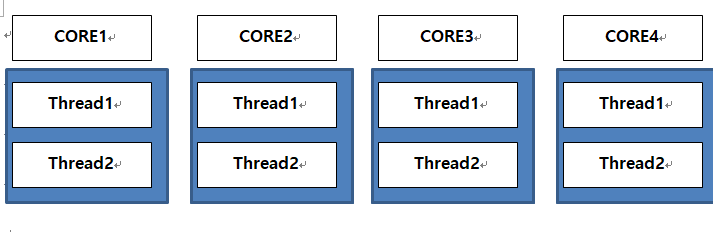
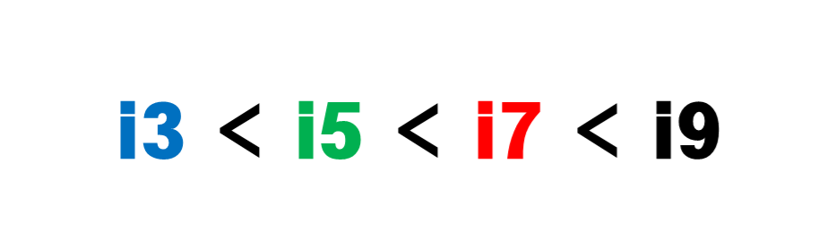
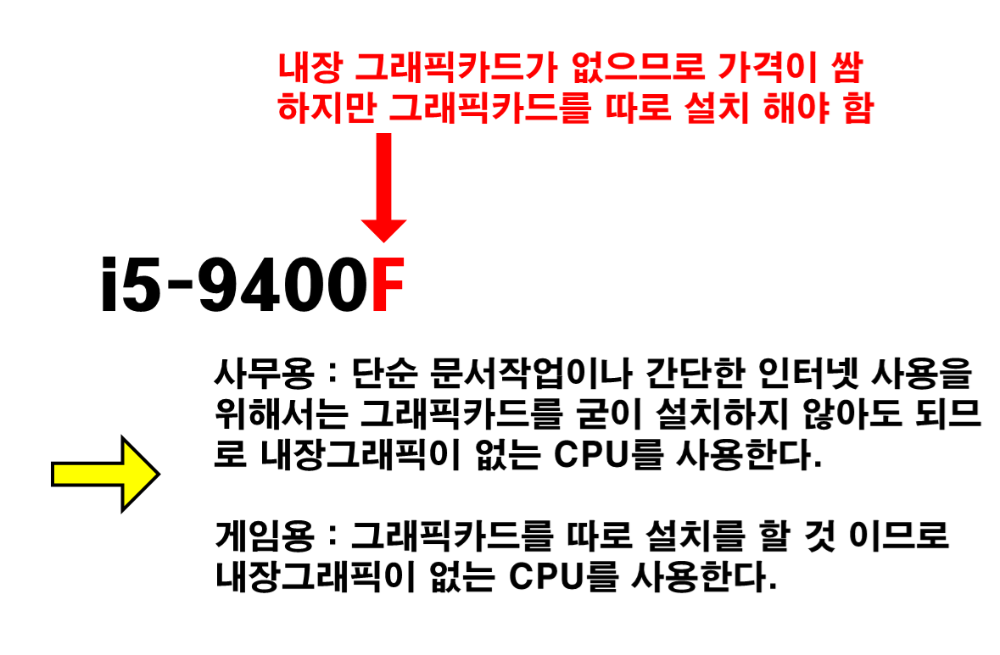

CPU(Central Processing Unit)
CPU는 트렌지스터의 복합체다. 한마디로 수 많은 트렌지스터가 모여 만들어진 것이 CPU이다.
CPU의 성능을 쉽게 알기위해서는 1.코어형태 2.쓰레드형태 3.동작속도 에 대해 알아보면 된다.
CPU를 공장이라고 하자 그리고 일꾼을 트렌지스터라고 하자. 공장마다 일꾼들의 속도가 다를 것이다.
이때 일꾼들의 속도를 동작속도 즉 클럭이라고한다.
코어와 쓰레드는 다음 표를 확인해보자.

코어와 쓰레드가 많으면 다중작업에서 효율적이다.
<인텔>

i3보다는 i5보다는 i7보다는 i9의 성능이 좋다.
제일 앞에 있는 숫자는 세대수를 의미한다. 클수록 좋다
백의자리숫자는 CPU의 성능을 의미하고 클수록 좋다
오버클록을 통해서 CPU의 성능을 향상시킬 수 있지만 오버클록은 복잡하고 수동으로 해야함을 명심하자

< AMD >
i3보다는 i5보다는 i7보다는 i9의 성능이 좋다.

제일 앞에 있는 숫자는 세대수를 의미한다. 클수록 좋다
백의자리숫자는 CPU의 성능을 의미하고 클수록 좋다

X가 붙어있는 CPU는 제조사에서 오버클럭을 자동으로 해주어 판매하는 제품이다
오버클록을 통해서 CPU의 성능을 향상시킬 수 있지만 오버클록은 복잡하고 수동으로 해야함을 명심하자